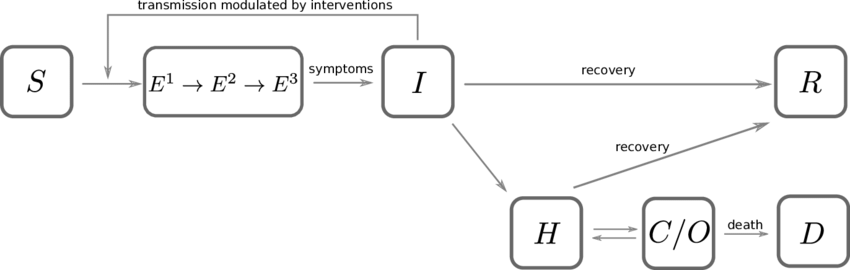
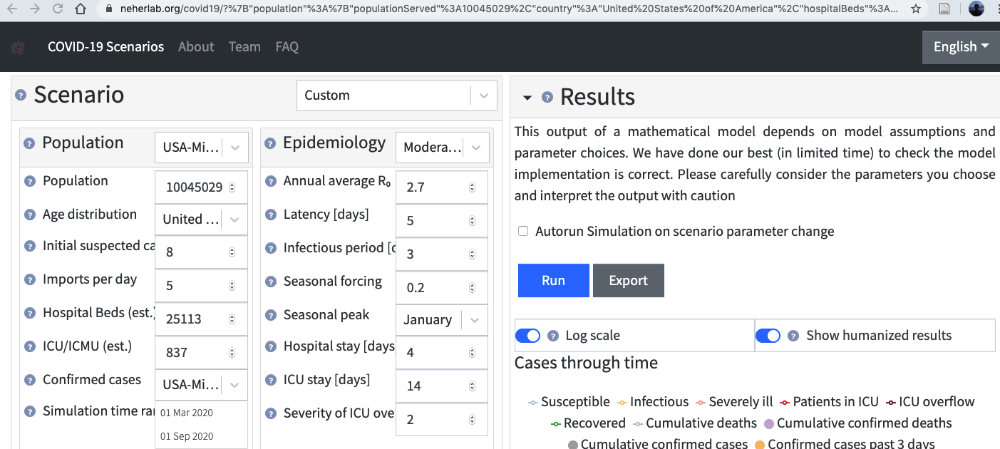
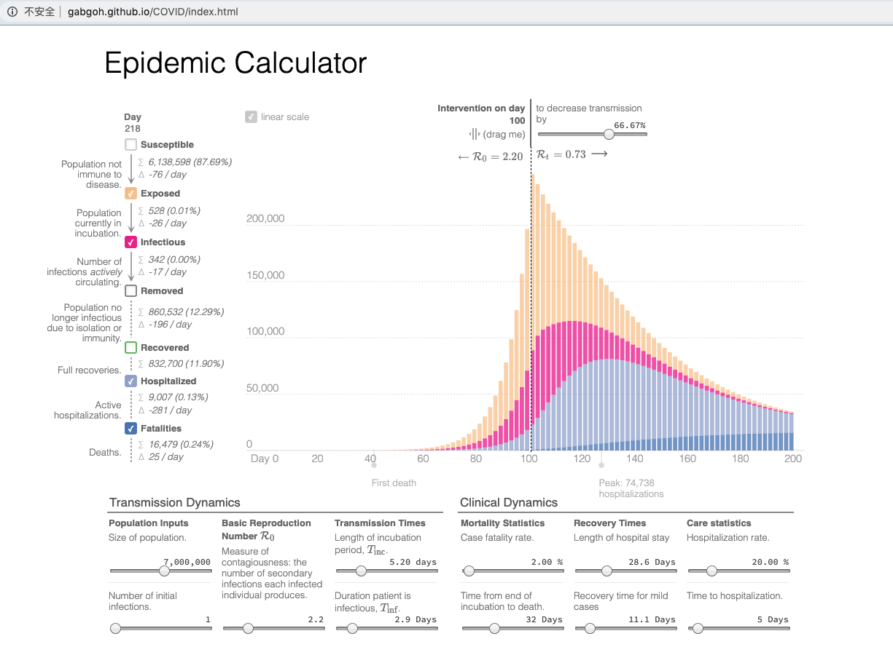
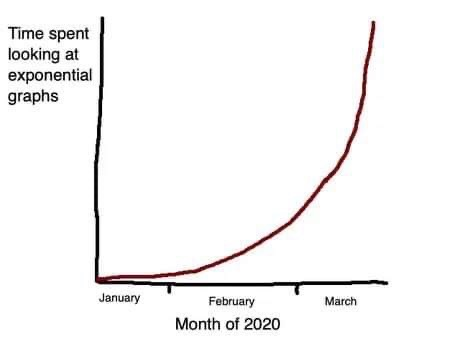
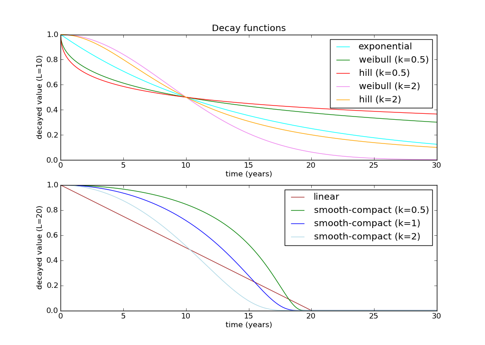

SEIR-HCD Model¶

https://www.kaggle.com/anjum48/seir-hcd-model
This is a working example of a SIER model with added compartments for HCD. The letters stand for:
Susceptible, Exposed, Infected, Recovered
Hospitalized, Critical, Death
The author had adapted the equations from these great web apps:
http://gabgoh.github.io/COVID/index.html
https://neherlab.org/covid19

http://gabgoh.github.io/COVID/index.html

https://covid19-scenarios.org/
https://neherlab.org/covid19

https://pbs.twimg.com/media/EUJNQQDXsAwz0tK?format=jpg
import pandas as pd
import numpy as np
import matplotlib.pyplot as plt
from pathlib import Path
import os
from tqdm.notebook import tqdm
from scipy.integrate import solve_ivp
from scipy.optimize import minimize
from sklearn.metrics import mean_squared_log_error, mean_squared_error
# solve_ivp?
This function numerically integrates a system of ordinary differential equations given an initial value::
dy / dt = f(t, y)
y(t0) = y0
Here
t is a one-dimensional independent variable (time),
y(t) is an n-dimensional vector-valued function (state), and
f(t, y) is an n-dimensional vector-valued function that determines the differential equations.
The goal is to find y(t) approximately satisfying the differential equations, given an initial value y(t0)=y0.
Parameters used in the model¶
R_t = reproduction number at time t. Typical 3.6* at t=0
Transition times
T_inc= average incubation period. Typical 5.6* daysT_inf= average infectious period. Typical 2.9 daysT_hosp= average time a patient is in hospital before either recovering or becoming critical. Typical 4 daysT_crit= average time a patient is in a critical state (either recover or die). Typical 14 days
Fractions These constants are likely to be age specific (hence the subscript a):
m_a= fraction of infections that are asymptomatic or mild. Assumed 80% (i.e. 20% severe)c_a= fraction of severe cases that turn critical. Assumed 10%f_a= fraction of critical cases that are fatal. Assumed 30%Averages taken from https://www.kaggle.com/covid-19-contributions
# Susceptible equation
def dS_dt(S, I, R_t, t_inf):
return -(R_t / t_inf) * I * S
# number of susceptible is always decreasing
# and it's proportional to the number of infected, existing susceptible, and rate of reproduction
# Exposed equation
def dE_dt(S, E, I, R_t, t_inf, t_inc):
return (R_t / t_inf) * I * S - (E / t_inc)
# = -Ds_dt - infected
# it's proportion to the newly exposed minus the infected (in a small time period)
# Infected equation
def dI_dt(I, E, t_inc, t_inf):
return (E / t_inc) - (I / t_inf)
# number of infected is proportion to newly infected minus those become other states
# Hospialized equation
def dH_dt(I, C, H, t_inf, t_hosp, t_crit, m_a, f_a):
return ((1 - m_a) * (I / t_inf)) + ((1 - f_a) * C / t_crit) - (H / t_hosp)
# Critical equation
def dC_dt(H, C, t_hosp, t_crit, c_a):
return (c_a * H / t_hosp) - (C / t_crit)
# Recovered equation
def dR_dt(I, H, t_inf, t_hosp, m_a, c_a):
return (m_a * I / t_inf) + (1 - c_a) * (H / t_hosp)
# Deaths equation
def dD_dt(C, t_crit, f_a):
return f_a * C / t_crit
def SEIR_HCD_model(t, y, R_t, t_inc=2.9, t_inf=5.2, t_hosp=4, t_crit=14, m_a=0.8, c_a=0.1, f_a=0.3):
"""
:param t: Time step for solve_ivp
:param y: Previous solution or initial values
:param R_t: Reproduction number
:param t_inc: Average incubation period. Default 5.2 days
:param t_inf: Average infectious period. Default 2.9 days
:param t_hosp: Average time a patient is in hospital before either recovering or becoming critical. Default 4 days
:param t_crit: Average time a patient is in a critical state (either recover or die). Default 14 days
:param m_a: Fraction of infections that are asymptomatic or mild. Default 0.8
:param c_a: Fraction of severe cases that turn critical. Default 0.1
:param f_a: Fraction of critical cases that are fatal. Default 0.3
:return:
"""
if callable(R_t):
reprod = R_t(t)
else:
reprod = R_t
S, E, I, R, H, C, D = y
S_out = dS_dt(S, I, reprod, t_inf)
E_out = dE_dt(S, E, I, reprod, t_inf, t_inc)
I_out = dI_dt(I, E, t_inc, t_inf)
R_out = dR_dt(I, H, t_inf, t_hosp, m_a, c_a)
H_out = dH_dt(I, C, H, t_inf, t_hosp, t_crit, m_a, f_a)
C_out = dC_dt(H, C, t_hosp, t_crit, c_a)
D_out = dD_dt(C, t_crit, f_a)
return [S_out, E_out, I_out, R_out, H_out, C_out, D_out]
def plot_model(solution, title='SEIR+HCD model'):
sus, exp, inf, rec, hosp, crit, death = solution.y
cases = inf + rec + hosp + crit + death
fig, (ax1, ax2) = plt.subplots(1, 2, figsize=(16,5))
fig.suptitle(title)
ax1.plot(sus, 'tab:blue', label='Susceptible');
ax1.plot(exp, 'tab:orange', label='Exposed');
ax1.plot(inf, 'tab:red', label='Infected');
ax1.plot(rec, 'tab:green', label='Recovered');
ax1.plot(hosp, 'tab:purple', label='Hospitalised');
ax1.plot(crit, 'tab:brown', label='Critical');
ax1.plot(death, 'tab:cyan', label='Deceased');
ax1.set_xlabel("Days", fontsize=10);
ax1.set_ylabel("Fraction of population", fontsize=10);
ax1.legend(loc='best');
ax2.plot(cases, 'tab:red', label='Cases');
ax2.set_xlabel("Days", fontsize=10);
ax2.set_ylabel("Fraction of population (Cases)", fontsize=10, color='tab:red');
ax3 = ax2.twinx()
ax3.plot(death, 'tab:cyan', label='Deceased');
ax3.set_xlabel("Days", fontsize=10);
ax3.set_ylabel("Fraction of population (Fatalities)", fontsize=10, color='tab:cyan');
Model without intervention¶
Let’s see what the model looks like without any intervention, i.e. R_0 is a contant value
N = 100000 # Population size
n_infected = 1
max_days = 100
# State at time = 0 for SEIR_HCD model
# The numbers correspond to the number of people in each of the SEIRHCD compartments
initial_state = [(N - n_infected)/ N, 0, n_infected / N, 0, 0, 0, 0]
R_0 = 3.6
t_inc = 5.6
t_inf = 2.9
t_hosp = 4
t_crit = 14
m_a = 0.8
c_a = 0.1
f_a = 0.3
args = (R_0, t_inc, t_inf, t_hosp, t_crit, m_a, c_a, f_a)
sol = solve_ivp(SEIR_HCD_model, [0, max_days], initial_state, args=args, t_eval=np.arange(max_days))
plot_model(sol, 'SEIR-HCD Model (without intervention)')
Model with intervention¶
Lets assume that there is some intervention that causes the reproduction number (R_0) to fall to a lower value (R_t) at a certain time (e.g. physical distancing). Note that the actual drop will occur some time after the intervention measures are implemented.
This could be modified to take any function of R_t(t) values to model the reproduction number as a time varying variable
R_0 = 3.6 # reproduction number without intervention
R_t = 0.7 # reproduction number after intervention
intervention_day = 45
def time_varying_reproduction(t):
if t > intervention_day:
return R_t
else:
return R_0
args = (time_varying_reproduction, t_inc, t_inf, t_hosp, t_crit, m_a, c_a, f_a)
sol2 = solve_ivp(SEIR_HCD_model, [0, max_days], initial_state, args=args, t_eval=np.arange(max_days))
plot_model(sol2, f'SEIR-HCD Model (with intervention on day {intervention_day})')
Let’s compare the infection rate between the two cases
sus, exp, inf, rec, hosp, crit, deaths = sol.y
sus2, exp2, inf2, rec2, hosp2, crit2, deaths2 = sol2.y
f = plt.figure(figsize=(8,5))
# plt.plot(exp, 'tab:orange', label='Exposed', linestyle=':');
plt.plot(inf, 'r', label='Infected', linestyle=':');
plt.plot(deaths, 'b', label='Deceased', linestyle=':');
plt.plot(hosp, 'tab:purple', label='Hospitalised', linestyle=':');
# plt.plot(exp2, 'tab:orange', label='Exposed with intervention');
plt.plot(inf2, 'r', label='Infected with intervention');
plt.plot(deaths2, 'b', label='Deceased with intervention');
plt.plot(hosp2, 'tab:purple', label='Hospitalised with intervention');
plt.title(f'Comparison of the effect of the intervention on day {intervention_day}')
plt.xlabel("Days", fontsize=10);
plt.ylabel("Fraction of population", fontsize=10);
plt.legend(loc='best');
You can see that after the intervention on day 45, the peak infections is lower than if there was no intervention and there are less than half as many deaths. You can see how powerful self-isolation is from this chart
Fitting the model to data¶
There are certain variables that we can play with to fit the model to real data:
Average incubation period,
t_incAverage infection period,
t_infAverage hospitalization period,
t_hospAverage critital period,
t_critThe fraction of mild/asymptomatic cases,
m_aThe fraction of severe cases that turn critical,
c_aThe fraction of critical cases that result in a fatality,
f_aReproduction number,
R_0orR_t
The some of these are likely to be constants specific to the virus and some are likely to be time dependent variables dependent on factors such as:
When a government intervened
Peoples behaviours (do people actively self-isolate, not visit religious shrines etc.)
Population demographic of a country (is a significant proportion of the population old?). This is the
asubscriptHeathcare system capacity (hostpital beds per capita)
Number of testing kits available
We have already used two different reproduction numbers above. Let’s see if we can derive a time-dependent R_t from the data. We will also try and optimize a handful of the parameters above to match the data.
We will also compare this to just using a single reproduction number. This might actaully be more suitable in countries where the outbreak has just started or they are struggling to limit the spread.
There are lots of ways to decay a parameter in epidemiology. I’m going to use a Hill decay, which has 2 parameters, k and L (the half decay constant):

https://raw.githubusercontent.com/wiki/SwissTPH/openmalaria/img/graphs/decay-functions.png
DATE_BORDER = '2020-04-08'
data_path = Path('/Users/datalab/bigdata/covid19-global-forecasting-week-3/')
train = pd.read_csv(data_path / 'train.csv', parse_dates=['Date'])
test = pd.read_csv(data_path /'test.csv', parse_dates=['Date'])
submission = pd.read_csv(data_path /'submission.csv', index_col=['ForecastId'])
# Load the population data into lookup dicts
# https://www.kaggle.com/anjum48/covid19-population-data
pop_info = pd.read_csv('/Users/datalab/bigdata/covid19-global-forecasting-week-3/population_data.csv')
country_pop = pop_info.query('Type == "Country/Region"')
province_pop = pop_info.query('Type == "Province/State"')
country_lookup = dict(zip(country_pop['Name'], country_pop['Population']))
province_lookup = dict(zip(province_pop['Name'], province_pop['Population']))
# Fix the Georgia State/Country confusion - probably a better was of doing this :)
train['Province_State'] = train['Province_State'].replace('Georgia', 'Georgia (State)')
test['Province_State'] = test['Province_State'].replace('Georgia', 'Georgia (State)')
province_lookup['Georgia (State)'] = province_lookup['Georgia']
train['Area'] = train['Province_State'].fillna(train['Country_Region'])
test['Area'] = test['Province_State'].fillna(test['Country_Region'])
# https://www.kaggle.com/c/covid19-global-forecasting-week-1/discussion/139172
train['ConfirmedCases'] = train.groupby('Area')['ConfirmedCases'].cummax()
train['Fatalities'] = train.groupby('Area')['Fatalities'].cummax()
# Remove the leaking data
train_full = train.copy()
valid = train[train['Date'] >= test['Date'].min()]
train = train[train['Date'] < test['Date'].min()]
# Split the test into public & private
test_public = test[test['Date'] <= DATE_BORDER]
test_private = test[test['Date'] > DATE_BORDER]
# Use a multi-index for easier slicing
train_full.set_index(['Area', 'Date'], inplace=True)
train.set_index(['Area', 'Date'], inplace=True)
valid.set_index(['Area', 'Date'], inplace=True)
test_public.set_index(['Area', 'Date'], inplace=True)
test_private.set_index(['Area', 'Date'], inplace=True)
submission['ConfirmedCases'] = 0
submission['Fatalities'] = 0
train_full.shape, train.shape, valid.shape, test_public.shape, test_private.shape, submission.shape
((22338, 5), (19584, 5), (2754, 5), (4284, 3), (8874, 3), (13158, 2))
The function below evaluates a model with a constant R number as well as t_hosp, t_crit, m, c, f
OPTIM_DAYS = 14 # Number of days to use for the optimisation evaluation
# Use a constant reproduction number
def eval_model_const(params, data, population, return_solution=False, forecast_days=0):
R_0, t_hosp, t_crit, m, c, f = params
N = population
n_infected = data['ConfirmedCases'].iloc[0]
max_days = len(data) + forecast_days
initial_state = [(N - n_infected)/ N, 0, n_infected / N, 0, 0, 0, 0]
args = (R_0, 5.6, 2.9, t_hosp, t_crit, m, c, f)
sol = solve_ivp(SEIR_HCD_model, [0, max_days], initial_state, args=args, t_eval=np.arange(0, max_days))
sus, exp, inf, rec, hosp, crit, deaths = sol.y
y_pred_cases = np.clip(inf + rec + hosp + crit + deaths, 0, np.inf) * population
y_true_cases = data['ConfirmedCases'].values
y_pred_fat = np.clip(deaths, 0, np.inf) * population
y_true_fat = data['Fatalities'].values
optim_days = min(OPTIM_DAYS, len(data)) # Days to optimise for
weights = 1 / np.arange(1, optim_days+1)[::-1] # Recent data is more heavily weighted
msle_cases = mean_squared_log_error(y_true_cases[-optim_days:], y_pred_cases[-optim_days:], weights)
msle_fat = mean_squared_log_error(y_true_fat[-optim_days:], y_pred_fat[-optim_days:], weights)
msle_final = np.mean([msle_cases, msle_fat])
if return_solution:
return msle_final, sol
else:
return msle_final
The function below is essentially the same as above, by R is decayed using a Hill decay function. This model requires 2 additional parameters to be optimized, k & L
# Use a Hill decayed reproduction number
def eval_model_decay(params, data, population, return_solution=False, forecast_days=0):
R_0, t_hosp, t_crit, m, c, f, k, L = params
N = population
n_infected = data['ConfirmedCases'].iloc[0]
max_days = len(data) + forecast_days
# https://github.com/SwissTPH/openmalaria/wiki/ModelDecayFunctions
# Hill decay. Initial values: R_0=2.2, k=2, L=50
def time_varying_reproduction(t):
return R_0 / (1 + (t/L)**k)
initial_state = [(N - n_infected)/ N, 0, n_infected / N, 0, 0, 0, 0]
args = (time_varying_reproduction, 5.6, 2.9, t_hosp, t_crit, m, c, f)
sol = solve_ivp(SEIR_HCD_model, [0, max_days], initial_state, args=args, t_eval=np.arange(0, max_days))
sus, exp, inf, rec, hosp, crit, deaths = sol.y
y_pred_cases = np.clip(inf + rec + hosp + crit + deaths, 0, np.inf) * population
y_true_cases = data['ConfirmedCases'].values
y_pred_fat = np.clip(deaths, 0, np.inf) * population
y_true_fat = data['Fatalities'].values
optim_days = min(OPTIM_DAYS, len(data)) # Days to optimise for
weights = 1 / np.arange(1, optim_days+1)[::-1] # Recent data is more heavily weighted
msle_cases = mean_squared_log_error(y_true_cases[-optim_days:], y_pred_cases[-optim_days:], weights)
msle_fat = mean_squared_log_error(y_true_fat[-optim_days:], y_pred_fat[-optim_days:], weights)
msle_final = np.mean([msle_cases, msle_fat])
if return_solution:
return msle_final, sol
else:
return msle_final
def use_last_value(train_data, valid_data, test_data):
lv = train_data[['ConfirmedCases', 'Fatalities']].iloc[-1].values
forecast_ids = test_data['ForecastId']
submission.loc[forecast_ids, ['ConfirmedCases', 'Fatalities']] = lv
if valid_data is not None:
y_pred_valid = np.ones((len(valid_data), 2)) * lv.reshape(1, 2)
y_true_valid = valid_data[['ConfirmedCases', 'Fatalities']]
msle_cases = mean_squared_log_error(y_true_valid['ConfirmedCases'], y_pred_valid[:, 0])
msle_fat = mean_squared_log_error(y_true_valid['Fatalities'], y_pred_valid[:, 1])
msle_final = np.mean([msle_cases, msle_fat])
return msle_final
def plot_model_results(y_pred, train_data, valid_data=None):
fig, (ax1, ax2) = plt.subplots(1, 2, figsize=(16,5))
ax1.set_title('Confirmed Cases')
ax2.set_title('Fatalities')
train_data['ConfirmedCases'].plot(label='Confirmed Cases (train)', color='g', ax=ax1)
y_pred.loc[train_data.index, 'ConfirmedCases'].plot(label='Modeled Cases', color='r', ax=ax1)
ax3 = y_pred['R'].plot(label='Reproduction number', color='c', linestyle='-', secondary_y=True, ax=ax1)
ax3.set_ylabel("Reproduction number", fontsize=10, color='c');
train_data['Fatalities'].plot(label='Fatalities (train)', color='g', ax=ax2)
y_pred.loc[train_data.index, 'Fatalities'].plot(label='Modeled Fatalities', color='r', ax=ax2)
if valid_data is not None:
valid_data['ConfirmedCases'].plot(label='Confirmed Cases (valid)', color='g', linestyle=':', ax=ax1)
valid_data['Fatalities'].plot(label='Fatalities (valid)', color='g', linestyle=':', ax=ax2)
y_pred.loc[valid_data.index, 'ConfirmedCases'].plot(label='Modeled Cases (forecast)', color='r', linestyle=':', ax=ax1)
y_pred.loc[valid_data.index, 'Fatalities'].plot(label='Modeled Fatalities (forecast)', color='r', linestyle=':', ax=ax2)
else:
y_pred.loc[:, 'ConfirmedCases'].plot(label='Modeled Cases (forecast)', color='r', linestyle=':', ax=ax1)
y_pred.loc[:, 'Fatalities'].plot(label='Modeled Fatalities (forecast)', color='r', linestyle=':', ax=ax2)
ax1.legend(loc='best')
The function below fits a SEIR-HCD model for each area, either using a constant R or a decayed R, whichever is better. If the total cases/1M pop is below 1, then the last value is used.
def fit_model_public(area_name,
initial_guess=[3.6, 4, 14, 0.8, 0.1, 0.3, 2, 50],
bounds=((1, 20), # R bounds
(0.5, 10), (2, 20), # transition time param bounds
(0.5, 1), (0, 1), (0, 1), (1, 5), (1, 100)), # fraction time param bounds
make_plot=True):
train_data = train.loc[area_name].query('ConfirmedCases > 0')
valid_data = valid.loc[area_name]
test_data = test_public.loc[area_name]
try:
population = province_lookup[area_name]
except KeyError:
population = country_lookup[area_name]
cases_per_million = train_data['ConfirmedCases'].max() * 10**6 / population
n_infected = train_data['ConfirmedCases'].iloc[0]
if cases_per_million < 1:
return use_last_value(train_data, valid_data, test_data)
res_const = minimize(eval_model_const, initial_guess[:-2], bounds=bounds[:-2],
args=(train_data, population, False),
method='L-BFGS-B')
res_decay = minimize(eval_model_decay, initial_guess, bounds=bounds,
args=(train_data, population, False),
method='L-BFGS-B')
dates_all = train_data.index.append(test_data.index)
dates_val = train_data.index.append(valid_data.index)
# If using a constant R number is better, use that model
if res_const.fun < res_decay.fun:
msle, sol = eval_model_const(res_const.x, train_data, population, True, len(test_data))
res = res_const
R_t = pd.Series([res_const.x[0]] * len(dates_val), dates_val)
else:
msle, sol = eval_model_decay(res_decay.x, train_data, population, True, len(test_data))
res = res_decay
# Calculate the R_t values
t = np.arange(len(dates_val))
R_0, t_hosp, t_crit, m, c, f, k, L = res.x
R_t = pd.Series(R_0 / (1 + (t/L)**k), dates_val)
sus, exp, inf, rec, hosp, crit, deaths = sol.y
y_pred = pd.DataFrame({
'ConfirmedCases': np.clip(inf + rec + hosp + crit + deaths, 0, np.inf) * population,
'Fatalities': np.clip(deaths, 0, np.inf) * population,
'R': R_t,
}, index=dates_all)
y_pred_valid = y_pred.iloc[len(train_data): len(train_data)+len(valid_data)]
y_pred_test = y_pred.iloc[len(train_data):]
y_true_valid = valid_data[['ConfirmedCases', 'Fatalities']]
valid_msle_cases = mean_squared_log_error(y_true_valid['ConfirmedCases'], y_pred_valid['ConfirmedCases'])
valid_msle_fat = mean_squared_log_error(y_true_valid['Fatalities'], y_pred_valid['Fatalities'])
valid_msle = np.mean([valid_msle_cases, valid_msle_fat])
if make_plot:
print(f'Validation MSLE: {valid_msle:0.5f}')
print(f'R: {res.x[0]:0.3f}, t_hosp: {res.x[1]:0.3f}, t_crit: {res.x[2]:0.3f}, '
f'm: {res.x[3]:0.3f}, c: {res.x[4]:0.3f}, f: {res.x[5]:0.3f}')
plot_model_results(y_pred, train_data, valid_data)
# Put the forecast in the submission
forecast_ids = test_data['ForecastId']
submission.loc[forecast_ids, ['ConfirmedCases', 'Fatalities']] = y_pred_test[['ConfirmedCases', 'Fatalities']].values
return valid_msle
# Fit a model on the full dataset (i.e. no validation)
def fit_model_private(area_name,
initial_guess=[3.6, 4, 14, 0.8, 0.1, 0.3, 2, 50],
bounds=((1, 20), # R bounds
(0.5, 10), (2, 20), # transition time param bounds
(0.5, 1), (0, 1), (0, 1), (1, 5), (1, 100)), # fraction time param bounds
make_plot=True):
train_data = train_full.loc[area_name].query('ConfirmedCases > 0')
test_data = test_private.loc[area_name]
try:
population = province_lookup[area_name]
except KeyError:
population = country_lookup[area_name]
cases_per_million = train_data['ConfirmedCases'].max() * 10**6 / population
n_infected = train_data['ConfirmedCases'].iloc[0]
if cases_per_million < 1:
return use_last_value(train_data, None, test_data)
res_const = minimize(eval_model_const, initial_guess[:-2], bounds=bounds[:-2],
args=(train_data, population, False),
method='L-BFGS-B')
res_decay = minimize(eval_model_decay, initial_guess, bounds=bounds,
args=(train_data, population, False),
method='L-BFGS-B')
dates_all = train_data.index.append(test_data.index)
# If using a constant R number is better, use that model
if res_const.fun < res_decay.fun:
msle, sol = eval_model_const(res_const.x, train_data, population, True, len(test_data))
res = res_const
R_t = pd.Series([res_const.x[0]] * len(dates_all), dates_all)
else:
msle, sol = eval_model_decay(res_decay.x, train_data, population, True, len(test_data))
res = res_decay
# Calculate the R_t values
t = np.arange(len(dates_all))
R_0, t_hosp, t_crit, m, c, f, k, L = res.x
R_t = pd.Series(R_0 / (1 + (t/L)**k), dates_all)
sus, exp, inf, rec, hosp, crit, deaths = sol.y
y_pred = pd.DataFrame({
'ConfirmedCases': np.clip(inf + rec + hosp + crit + deaths, 0, np.inf) * population,
'Fatalities': np.clip(deaths, 0, np.inf) * population,
'R': R_t,
}, index=dates_all)
y_pred_test = y_pred.iloc[len(train_data):]
if make_plot:
print(f'R: {res.x[0]:0.3f}, t_hosp: {res.x[1]:0.3f}, t_crit: {res.x[2]:0.3f}, '
f'm: {res.x[3]:0.3f}, c: {res.x[4]:0.3f}, f: {res.x[5]:0.3f}')
plot_model_results(y_pred, train_data)
# Put the forecast in the submission
forecast_ids = test_data['ForecastId']
submission.loc[forecast_ids, ['ConfirmedCases', 'Fatalities']] = y_pred_test[['ConfirmedCases', 'Fatalities']].values
fit_model_public('Italy')
fit_model_private('Italy')
Validation MSLE: 0.01854
R: 3.832, t_hosp: 0.823, t_crit: 12.281, m: 0.542, c: 0.799, f: 1.000
R: 4.333, t_hosp: 0.502, t_crit: 3.916, m: 0.500, c: 0.351, f: 1.000
Above you can see the model optimized on the last 14 days of data from Italy which has been weighted to put more importance on recent data
The numbers show that R_0 was around 3.5 and a decayed value is a better fit to the data. This is good news for Italy as it shows its measures are working.
Let’s try Iran, South Korea and Japan. I chose these countries since they are probably the most challenging to model
fit_model_public('Iran')
fit_model_private('Iran')
Validation MSLE: 0.08769
R: 9.729, t_hosp: 0.500, t_crit: 2.000, m: 0.616, c: 0.284, f: 0.947
R: 17.751, t_hosp: 0.541, t_crit: 2.000, m: 0.810, c: 0.477, f: 1.000
An unusual feature of the Iranian data is how high the R value needs to be for the model to fit. Iran was criticised for not closing religious shrines and locking down earlier, so the virus was extremely contagious. The data also appears of have multiple inflection points
fit_model_public('Korea, South')
fit_model_private('Korea, South')
Validation MSLE: 0.05582
R: 3.080, t_hosp: 3.490, t_crit: 13.857, m: 0.575, c: 0.104, f: 0.966
R: 3.538, t_hosp: 0.830, t_crit: 11.987, m: 0.612, c: 0.060, f: 1.000
South Korea is unusual due to the incredible efforts to stop the spread
fit_model_public('Japan')
fit_model_private('Japan')
Validation MSLE: 0.03857
R: 2.580, t_hosp: 3.999, t_crit: 13.999, m: 0.539, c: 0.380, f: 0.489
R: 2.858, t_hosp: 3.890, t_crit: 13.966, m: 0.505, c: 0.194, f: 0.738
I’m not sure why the red line is so wiggly for Japan ¯\(ツ)/¯
fit_model_public('Hubei')
fit_model_private('Hubei')
Validation MSLE: 0.08612
R: 2.136, t_hosp: 3.908, t_crit: 13.967, m: 0.500, c: 0.210, f: 0.941
R: 2.759, t_hosp: 0.501, t_crit: 2.000, m: 0.915, c: 0.556, f: 0.999
The plot for Hubei looks really good. In fact the data for most of the Chinese provinces fit well to compartment models
fit_model_public('United Kingdom')
fit_model_private('United Kingdom')
Validation MSLE: 0.24951
R: 2.642, t_hosp: 4.003, t_crit: 13.992, m: 0.500, c: 0.924, f: 0.567
R: 2.682, t_hosp: 3.890, t_crit: 13.947, m: 0.500, c: 0.977, f: 0.998
Things are not looking good for the UK. Let’s hope the lockdown starts bringing the R number down soon
Calculate for all countries¶
# Public Leaderboard
validation_scores = []
for c in tqdm(test_public.index.levels[0].values):
try:
score = fit_model_public(c, make_plot=False)
validation_scores.append({'Country': c, 'MSLE': score})
print(f'{c} {score:0.5f}')
except IndexError as e:
print(c, 'has no cases in train')
except ValueError as e:
print(c, e)
validation_scores = pd.DataFrame(validation_scores)
print(f'Mean validation score: {np.sqrt(validation_scores["MSLE"].mean()):0.5f}')
Afghanistan 0.12743
Alabama 0.72514
Alaska 0.09241
Albania 0.51119
Alberta 0.06648
Algeria 0.13221
Andorra 0.33393
Angola 0.56596
Anguilla has no cases in train
Anhui 0.11927
Antigua and Barbuda 0.17268
Argentina 0.02215
Arizona 0.10757
Arkansas 0.01253
Armenia 0.88906
Aruba 0.09779
Australian Capital Territory 0.73338
Austria 0.08769
Azerbaijan 0.08695
Bahamas 0.37651
Bahrain 0.07500
Bangladesh 0.03315
Barbados 0.02815
Beijing 2.41455
Belarus 0.35242
Belgium 0.31902
Belize 2.25297
Benin 0.06801
Bermuda 0.02297
Bhutan 0.10333
Bolivia 1.28864
Bosnia and Herzegovina 0.06837
Botswana has no cases in train
Brazil 0.49535
British Columbia 0.01736
British Virgin Islands has no cases in train
Brunei 0.18483
Bulgaria 0.07416
Burkina Faso 1.52207
Burma has no cases in train
Burundi has no cases in train
Cabo Verde 0.06396
California 0.04217
Cambodia 0.02214
Cameroon 0.30591
Cayman Islands 0.26609
Central African Republic 0.00000
Chad 0.11143
Channel Islands 0.62658
Chile 0.03205
Chongqing 1.89328
Colombia 0.62988
Colorado 0.18060
Congo (Brazzaville) 0.70144
Congo (Kinshasa) 0.65394
Connecticut 0.16657
Costa Rica 0.38812
Cote d'Ivoire 0.29531
Croatia 0.18554
Cuba 0.10131
Curacao 0.24441
Cyprus 0.07476
Czechia 0.41217
Delaware 1.93817
Denmark 0.90012
Diamond Princess 0.00092
District of Columbia 0.04494
Djibouti 0.11526
Dominica 5.24321
Dominican Republic 0.11935
Ecuador 0.08528
Egypt 0.03193
El Salvador 0.31165
Equatorial Guinea 0.44533
Eritrea 0.45002
Estonia 0.41415
Eswatini 0.05699
Ethiopia 0.17059
Faroe Islands 0.04382
Fiji 0.86042
Finland 1.01845
Florida 0.20914
France 0.10769
French Guiana 0.01435
French Polynesia 0.18811
Fujian 0.00566
Gabon 0.24361
Gambia 0.13557
Gansu 0.60360
Georgia 0.00235
Georgia (State) 0.30753
Germany 0.20845
Ghana 0.95307
Gibraltar 0.16464
Greece 0.55200
Greenland 0.11858
Grenada 0.80539
Guadeloupe 0.10206
Guam 0.77077
Guangdong 2.41459
Guangxi 0.00654
Guatemala 0.21338
Guinea 0.98431
Guinea-Bissau 0.03865
Guizhou 0.00966
Guyana 1.01050
Hainan 1.89328
Haiti 0.11263
Hawaii 0.63963
Hebei 0.07986
Heilongjiang 0.00270
Henan 0.00528
Holy See 0.12816
Honduras 1.79433
Hong Kong 0.13896
Hubei 0.07748
Hunan 0.33991
Hungary 0.15512
Iceland 1.46830
Idaho 1.91254
Illinois 0.00430
India 0.82211
Indiana 0.14152
Indonesia 0.57203
Inner Mongolia 0.04602
Iowa 0.38892
Iran 0.06727
Iraq 0.07056
Ireland 0.26026
Isle of Man 0.13505
Israel 0.19562
Italy 0.01375
Jamaica 0.15535
Japan 0.03857
Jiangsu 0.00012
Jiangxi 0.37052
Jilin 0.24093
Jordan 1.33479
Kansas 0.09904
Kazakhstan 0.85740
Kentucky 0.12370
Kenya 0.57979
Korea, South 0.05582
Kosovo has no cases in train
Kuwait 0.03037
Kyrgyzstan 0.97073
Laos 0.34284
Latvia 0.00086
Lebanon 0.09737
Liaoning 0.60798
Liberia 0.03915
Libya 0.90676
Liechtenstein 0.32708
Lithuania 0.06698
Louisiana 0.25759
Luxembourg 0.51418
MS Zaandam has no cases in train
Macau 0.04072
Madagascar 0.29935
Maine 1.08531
Malaysia 0.26058
Maldives 0.02276
Mali 2.34126
Malta 0.00321
Manitoba 0.41790
Martinique 0.17515
Maryland 0.07188
Massachusetts 0.40826
Mauritania 0.35515
Mauritius 2.64983
Mayotte 0.76334
Mexico 0.09908
Michigan 1.69823
Minnesota 0.54377
Mississippi 1.81861
Missouri 1.68964
Moldova 0.47530
Monaco 0.16118
Mongolia 0.00190
Montana 0.97386
Montenegro 3.22150
Montserrat 0.47326
Morocco 0.10903
Mozambique 0.09737
Namibia 0.00506
Nebraska 0.83634
Nepal 0.07406
Netherlands 0.04488
Nevada 0.12397
New Brunswick 0.54344
New Caledonia 1.21304
New Hampshire 0.15590
New Jersey 0.83307
New Mexico 0.07984
New South Wales 0.18020
New York 0.52314
New Zealand 0.25058
Newfoundland and Labrador 0.43716
Nicaragua 0.34921
Niger 1.18147
Nigeria 0.41103
Ningxia 0.00000
North Carolina 0.34852
North Dakota 0.64453
North Macedonia 0.08234
Northern Territory 0.33617
Northwest Territories has no cases in train
Norway 0.07513
Nova Scotia 0.03640
Ohio 0.45557
Oklahoma 0.04166
Oman 0.10189
Ontario 1.02257
Oregon 0.14181
Pakistan 0.29874
Panama 0.11088
Papua New Guinea 0.00000
Paraguay 0.47218
Pennsylvania 0.19818
Peru 0.12140
Philippines 0.57713
Poland 0.04293
Portugal 0.02244
Prince Edward Island 0.11331
Puerto Rico 0.11795
Qatar 0.40275
Qinghai 0.00153
Quebec 0.06114
Queensland 0.59571
Reunion 0.04432
Rhode Island 1.47861
Romania 0.27696
Russia 3.46854
Rwanda 0.89259
Saint Barthelemy 0.04034
Saint Kitts and Nevis 0.03932
Saint Lucia 0.16478
Saint Vincent and the Grenadines 0.01102
San Marino 0.02950
Saskatchewan 0.42101
Saudi Arabia 0.55216
Senegal 0.11559
Serbia 0.05675
Seychelles 0.00738
Shaanxi 0.04003
Shandong 0.08495
Shanghai 1.68161
Shanxi 0.00021
Sichuan 0.04025
Sierra Leone has no cases in train
Singapore 0.04932
Sint Maarten 0.13071
Slovakia 1.56356
Slovenia 0.05741
Somalia 0.35669
South Africa 1.03612
South Australia 0.16676
South Carolina 0.20578
South Dakota 0.30670
Spain 0.16603
Sri Lanka 0.50197
St Martin 0.13419
Sudan 0.19168
Suriname 0.29944
Sweden 0.34320
Switzerland 0.03825
Syria 0.48475
Taiwan* 0.08788
Tanzania 0.14528
Tasmania 0.19882
Tennessee 0.37046
Texas 0.02742
Thailand 2.56193
Tianjin 0.96472
Tibet 0.00000
Timor-Leste 0.00000
Togo 0.31896
Trinidad and Tobago 0.03965
Tunisia 0.18126
Turkey 3.64505
Turks and Caicos Islands has no cases in train
Uganda 0.35980
Ukraine 0.17316
United Arab Emirates 0.38550
United Kingdom 0.24951
Uruguay 0.36832
Utah 0.03863
Uzbekistan 1.53152
Venezuela 2.42317
Vermont 0.87986
Victoria 1.29814
Vietnam 0.02202
Virgin Islands 0.89751
Virginia 0.13047
Washington 0.09858
West Bank and Gaza 0.41464
West Virginia 1.02550
Western Australia 0.14752
Wisconsin 0.64225
Wyoming 0.18819
Xinjiang 0.96091
Yukon has no cases in train
Yunnan 0.60884
Zambia 0.41583
Zhejiang 0.24028
Zimbabwe 0.23504
Mean validation score: 0.67788
# Find which areas are not being predicted well
validation_scores.sort_values(by=['MSLE'], ascending=False).head(20)
| Country | MSLE | |
|---|---|---|
| 63 | Dominica | 5.243210 |
| 270 | Turkey | 3.645047 |
| 224 | Russia | 3.468539 |
| 173 | Montenegro | 3.221502 |
| 162 | Mauritius | 2.649826 |
| 263 | Thailand | 2.561927 |
| 278 | Venezuela | 2.423165 |
| 94 | Guangdong | 2.414593 |
| 22 | Beijing | 2.414552 |
| 155 | Mali | 2.341258 |
| 25 | Belize | 2.252969 |
| 58 | Delaware | 1.938166 |
| 114 | Idaho | 1.912542 |
| 101 | Hainan | 1.893284 |
| 45 | Chongqing | 1.893284 |
| 167 | Mississippi | 1.818614 |
| 108 | Honduras | 1.794326 |
| 165 | Michigan | 1.698233 |
| 168 | Missouri | 1.689643 |
| 238 | Shanghai | 1.681608 |
# Private Leaderboard
for c in tqdm(test_private.index.levels[0].values):
try:
score = fit_model_private(c, make_plot=False)
except IndexError as e:
print(c, 'has no cases in train')
submission.round().to_csv('submission.csv')
submission.join(test.set_index('ForecastId')).query(f'Date > "{DATE_BORDER}"').round().to_csv('forecast.csv')
Todo/ideas¶
Some of the search boundaries boundaries are dependent on each other (e.g.
t_hospshould always be less thant_crit). UsingNonlinearConstraintmay solve thisTime dependence of other parameters, e.g.
fas hospitals get overwhelmedMix in other sources of data (e.g. number of hospital beds, age demographics)
Global optmisation of virus specific parameters
Use as features into a different model
Thoughts on compartment models¶
I think compartment models are very powerful toy models and add lots of value for scenario testing, e.g. when a healthcare system might be overwhelmed, the impact of various interventions etc.. They can also be easily bootstrapped using population demographics to generate uncertainty estimates on those scenarios.

The hospitalization compartment in this model is tricky to work with as I had to set the lower bounds for these transition times quite low (t_hosp, t_crit). I think the reason for this is that many countries are telling people to stay away from the hospitals unless they are experiencing severe symptoms, meaning that once a patient is in a hospital, there are likely to already be very sick. This means when I optimize the transition times to go from hospitalized > severe, the times are often very small.
However, I think that for this particular forecasting exercise and metric, there are more accurate methods that can be used. One could also use a compartment model like this to generate features for another model.